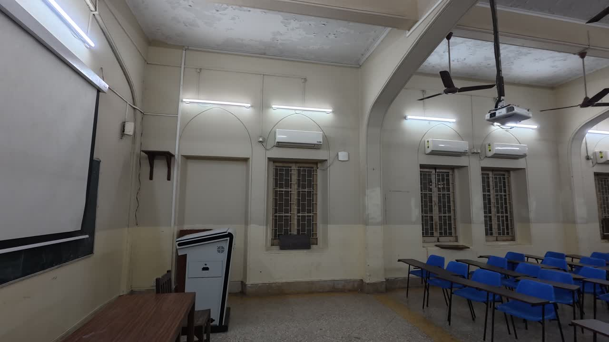
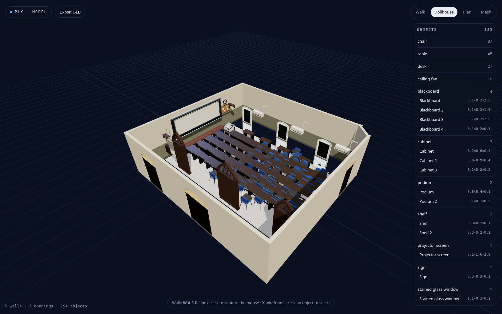
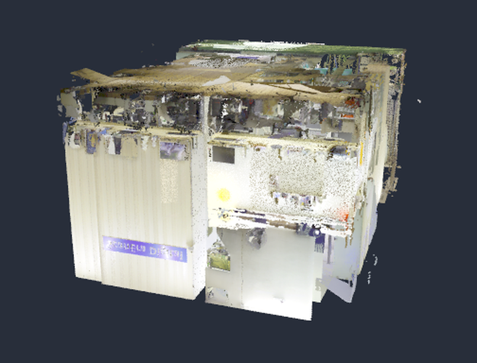

A phone walkthrough becomes a photoreal, searchable 3D twin with indoor directions that route around real furniture.
Indoor spaces have no usable map, so every unfamiliar building is navigated by asking someone. Ply takes a single handheld video, reconstructs the room as a metric 3D Gaussian splat, derives its structure, and serves the result to a browser: free first-person roaming, searchable points of interest, and a walking route computed on the actual floor. There is no scanner and no floor plan behind it. The pipeline solves camera poses, levels and scales the room from a phone-height prior, finds the floor and wall lines, builds a walkable occupancy grid at 0.1 m, detects the objects in it and reads their signage, then trains and streams the twin. A second capture path handles LiDAR where a scanner is available: a 184.6 million point E57 of an office was reduced to a 6.15 million point web cloud and measured to six walls and a 4.13 m ceiling. Both paths produce the same scene contract, so both land in the same navigation layer. Everything described here is built and running.

Four layers. A capture client on the phone, an edge API that stores clips and queues work, a GPU worker that runs the pipeline unattended, and a static web viewer that streams the finished twin. Each layer can fail without losing the others: a dropped capture resumes at its last uploaded part, a killed worker resumes at its last checkpoint, and the viewer needs nothing but files.
Capture has to run in a phone browser, so it is a client with no build step and no store approval. Reconstruction needs a discrete GPU, so it runs as a queued job with checkpoints rather than an on-demand service. Viewing has to scale to many judges at once, so it is static files on a CDN with range requests, and the heavy part of the twin (the splat) is streamed in chunks rather than downloaded whole. The queue lets a capture be submitted from one device and the finished twin opened from another.
The classroom twin ships three files: a 37.1 MB full SPZ, an 800,000 Gaussian phone file at 12.9 MB, and a chunked LOD set of 72 pieces. The viewer picks by device and streams during load, so a phone does not wait for the full cloud before the first frame. The LiDAR room is 89 MB of points, loaded progressively with a framing pass at the start. Navigation is WASD with pointer lock, plus plan and dollhouse views for orientation; the HUD and the route overlay are drawn in the same pass as the twin, and the minimap is a 2D canvas rather than a second WebGL context.
The GPU worker is the only metered part, so it is ephemeral: it claims a job, runs while the queue has work, and exits after three idle minutes. A scheduled wake-up restarts it when a job waits with no worker, and a spend cap stops it on the host side. The container image is built from a pinned revision, because a cached image once served pre-fix code for four runs; changing the revision is now part of the deploy. Every stage writes a checkpoint that is uploaded in order, so a job killed by a container timeout resumes where it stopped rather than starting over. Costs are recorded per run, which is how the 164 minute figure above is known rather than estimated.
Reconstruction quality is decided before the first frame is processed. The procedure below is what a person with no technical background follows, and the capture app enforces the parts a camera cannot enforce by itself. It is written as a printable checklist in docs/SOP.md and rendered at /ply/guide.html.
| Decision | Value | Why it is that value |
|---|---|---|
| Lens | Main 1× camera | Ultra-wide distorts corners, telephoto cuts overlap between passes. |
| Resolution | 4K at 30 fps | Downsampled to 1,728 px for the solver: more usable detail than native 1080p. 1080p60 only in a dim room. |
| Shutter | 1/100 s fixed | India's mains are 50 Hz, so lights cycle at 100 Hz. 1/100 s avoids banding and freezes a slow walk. Never slower than 1/60. |
| ISO and white balance | Locked, 200–800 and 4000–5500 K | Auto exposure makes walls change brightness between frames and breaks the appearance fit. |
| Focus | Manual at about 1.5 m | Continuous autofocus hunts during a walk; every hunt is a blurred frame. |
| Walk speed | About 0.5 m/s | The solver keeps one frame every 0.4 s, so a slow walk buys overlap rather than blur. |
| Path | 2 perimeter loops plus 1 cross pass | Loops cover walls and corners; the cross pass links the two sides and closes the loop where the walk started. |
| Entrance marker | A4 QR, 1.2 m high | Gives a known 297 mm dimension to check scale against, and becomes the AR anchor later. |
| Scene | Lights on, doors propped open, room empty | A person walking through a scan becomes a ghost in the twin and cannot be removed afterwards. |
The capture client reads the camera through getUserMedia and the phone's motion sensors, scores sharpness and exposure every half second, and shows coverage over the room so missed corners are visible before the walk ends. It warns on fast pans and on sudden exposure changes, and it offers an AR scan mode on Android that shows live coverage in world space. After upload, a coverage-check job runs frame selection, camera solving and alignment only, then publishes a preview so the operator can see which stretches were not solved and replace just those. A capture that fails the check never reaches training.
The classroom run was five clips totalling 8 minutes 4 seconds of 4K video, taken with the procedure above. From 2,167 extracted frames the solver kept the sharpest 542 at 2.5 frames per second of extraction. All 542 registered, with a mean reprojection error of 0.82 px. That is the number the rest of the report depends on: poses that are sub-pixel accurate give the appearance fit something solid to work with.
The procedure asks for one to two minutes of walking per room. The classroom run used eight minutes across five clips because the room was walked several times, which is why 2,167 frames went in and 542 came out. On Android Chrome the app can record an AR scan instead, taking pose and scale per frame from ARCore and removing the phone-height prior, with a narrower field of view as the trade.
Most failed captures fail visibly before upload: banded walls when the shutter is too slow for the lighting, a bright window darkening every other frame when auto exposure is left on, and soft corners from turning faster than the walk. The app flags those while there is still time to redo the pass. It cannot flag an unmapped corner, which is why coverage is drawn over the room and checked before training.
Seven stages run in order, each writing into a job folder and each resumable from a checkpoint. A router decides from the job's progress and the container's remaining lifetime whether to start a stage or wait for the next wake-up, so a long room is never killed halfway through training.
| Stage | What it produced on the classroom capture | Time |
|---|---|---|
| frames | 2,167 frames from 8 min of 4K, sharpest per window kept: 542, median sharpness 646 | 8 min |
| sfm | 542 of 542 images registered, 194,121 points, 0.82 px mean reprojection, focal 1,216 px | 35 min |
| align | floor from 99,106 inliers, tilt 0.82°, scale 1.025 from a 1.45 m camera height, residual 2.5 mm | 13 s |
| occupancy | 114 × 73 grid at 0.1 m: 3,294 free, 3,043 blocked, 1,985 unknown cells | 1 s |
| label | 4,639 detections over 109 frames, fused into 194 objects in 13 classes | 4 min |
| train | 3D Gaussian splats, 45,000 steps, SH degree 3, per-frame appearance correction | 96 min |
| export | 1,352,799 Gaussians, 37.1 MB SPZ, an 800,000 Gaussian phone file, chunked LOD | 21 min |
| total | one room, unattended, on a single rented L40S | 164 min |
A field comparison forced this. The same room was processed by a commercial 3DGS service, which returned a visibly sharper twin from 973 keyframes at 1024 px, 692,267 Gaussians and 14.5 MB in 32 minutes. Our run had more pixels, more Gaussians and six times the compute, and looked softer. A frame cap had silently lowered the kept rate to 1.1 per second, training ran to a 4 million cap that export then cut by two thirds, and antialiasing was off.
The pipeline now measures the capture instead of assuming. Kept frame rate follows the phone's own motion samples, working resolution follows the source pixels, the Gaussian cap follows the solved room's surface area at roughly 4,200 per square metre and never more than 2,200 per solution view, steps follow the view count at about fifty per view, and export thresholds are probed against the trained model until a filter keeps at least 85 percent of it. Every decision is written to plan.json beside the report, so a run can be audited later. On this capture the plan asks for 2.17 frames per second (it got 1.1), 1,728 px (it used 1,600), 27,100 steps and a 1.03 million Gaussian budget.
Export probes were once disabled to save time, which let a floater filter gut a 4 million splat model with no check; probes now measure before they filter. The mesh stage never ran because the CLI defaulted its last stage to export; the last stage is now derived from the stage list. A cached container image served pre-fix code until an explicit revision counter was added to the deploy. The frame cap above now logs a warning whenever it lowers the kept rate.
| File | Size | Read by |
|---|---|---|
| scene.json | 12.7 KB | the viewer: bounds, floor, spawn, camera path, splat references |
| shell.json | 6 KB | measurement overlay, AR alignment, the semantic model |
| places.json | 49 KB | search: 194 places with class, confidence and box |
| occupancy.png + .json | 1.4 KB / 0.4 KB | the router and the minimap |
| report.json | 4 KB | the status page and the post-run audit |
| scene.spz / scene_lite.spz | 37.1 MB / 12.9 MB | the splat, full and phone |
| lod/ | 72 chunks | range-requested LOD for slow links |
The output is not only a render. The room arrives with a floor height, wall lines, an occupancy grid and named places, which is what a router needs. Free cells are those the posed cameras could see through; blocked cells contain points; unknown cells were never observed. A* runs over free cells with blocked cells inflated by the walker's radius, so routes bend around desks. Places come from lifting 2D detections into 3D boxes, merging across frames and reading signage: 194 of them in the classroom.
LiDAR gives absolute geometry and a clean ceiling where video struggles. The office scan was 184.6 million points in a 3.3 GB E57: decimated to 6.15 million for the browser, hull-fitted to six walls and a 4.13 m ceiling, and tiled into 1 m cells that produced 42 furniture volumes. Coarser than the photo path, and the piece each path is meant to fix in the other.


| Measure | Classroom (video) | Office (LiDAR) |
|---|---|---|
| Input | 8 min, 5 clips, 4K | 1 scan, 184.6 M points, 3.3 GB E57 |
| Room recovered | 10.5 × 6.3 m, ceiling 3.1 m | 8.5 × 12.4 m, ceiling 4.13 m |
| Structure | 5 walls, 1 opening, floor residual 2.5 mm | 6 walls, floor at 0, ceiling measured |
| Places | 194 objects, 194 searchable places | 42 furniture volumes |
| Browser payload | 37 MB full, 12.9 MB phone | 89 MB cloud, 6.15 M points |
| Wall clock | 164 min on one L40S, about $6 at list price | one GPU pass to ingest and measure |
three.js (MIT), @sparkjsdev/spark (MIT), React (MIT), Vite and TypeScript (MIT), Tailwind (MIT), SuperSplat (MIT, PlayCanvas), gsplat (Apache-2.0), COLMAP and pycolmap (BSD-3-Clause), PyTorch (BSD-3-Clause), OpenCV (Apache-2.0), Hugging Face Transformers (Apache-2.0), @playcanvas/splat-transform (MIT). Copyright lines are in NOTICE in the repository.